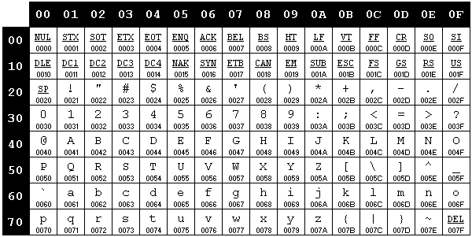

Understanding Character Sets
What is a Character Set?
A character set is set of assignments of integers to characters. It is very common for us to think of the number 65 as referring to the letter 'A', but that isn't always the case. This concept is the most important thing to understand here and not understanding it is the biggest source of confusion about character sets. Also, by "character" we generally mean "displayed glyph" and not the C++ "char" data type.
What is a Code Page?
A code page is for all practical purposes the same thing as a character set.
What is an Encoding?
An encoding is a way to represent character set values on a computer as a string of bytes. With ASCII encoding, encoded bytes are the same as character set bytes. But with encodings such as MBCS and UTF8, 1 character != 1 byte.
SBCS, MBCS, DBCS
SBCS means "Single Byte Character System"; each character is represented by one byte. MBCS means "Multi Byte Character System"; some characters are represented by one byte, while others are represented by two or more bytes. DBCS means "Double Byte Character System" and is a kind of MBCS where characters are represented by at most two bytes. UTF8 (see below) is a kind of MBCS as well.
ASCII
ASCII is a simple SBCS character set whose name stands for "America Standard Code for Information Interchange". It has been around since the 1950s, but the last important version of it is the 1968 revision (ANSI X.3.4-1968). ASCII includes 128 characters with values of 0-127 (see the chart below). ASCII is useful for displaying English, but that's about it.
Extended ASCII
Extended ASCII is an SBCS character set that most properly describes the 1983 ANSI revision (ANSI_X3.110-1983) of ASCII. It includes ASCII plus another 127 characters from 128 to 255 (see the chart below). Extended ASCII is useful for displaying English and most Western European languages. It is the same as ISO 8859-1 (below) but has some extra control characters.
ISO 8859-1 (Latin 1)
ISO 8859-1 is an SBCS character set similar to Extended ASCII. It is geared towards displaying characters useful for most Western European languages and not towards displaying symbolic characters. It is the character set that most unsophisticated web pages on the Internet use. There is an ISO 8859-2, -3, etc. but they are of little concern in the world of Unicode.
Unicode
Unicode is a "universal" character set that is effectively a superset of all other conventional character sets. As the Unicode web site says, "Unicode provides a unique number for every character, no matter what the platform, no matter what the program, no matter what the language." While the Unicode standard stands alone, it is for all practical purposes the same as ISO 10646; the two groups intentionally define these to be the same. The Unicode standard puts all characters into a 16 bit space, though room is left open for implementing more. An example of a font that may be on your Windows computer that has a very large percentage of glyphs from the Unicode character set is the 20MB "Arial Unicode" TrueType font. See http://www.unicode.org for more.
UCS2, UCS4
UCS means "Universal Character Set". UCS2 simply means that you are using two bytes (uint16_t) to store a Unicode character. UCS2 is how Microsoft implements Unicode in Windows. Most Unix variants implement Unicode via UCS4, which means that 4 bytes (uint32_t) are used per character. Since the Unicode standard puts all characters into a 16 bit character space, UCS4 is overkill for Unicode.
UTF8
UTF means "Unicode Transformation Format". UTF8 is an MBCS encoding of Unicode that is designed to be a superset of ASCII. The idea behind UTF8 is that string processing and parsing code that works with ASCII will work with UTF8 without modification. If you have an ASCII string, if could just as well be a UTF8 string. UTF8 adds the ability to store Unicode values as multi-byte sequences that involve byte values greater than 127. Thus, with UTF8, 1 byte sometimes equals 1 character set value and sometimes it doesn't. But either way, all UTF8 sequences map directly to Unicode characters; UTF8 is Unicode. Many web pages (especially Asian web pages) are implemented with UTF8 instead of ISO 8859-1.
UTF16
UTF16 is an encoding of Unicode that uses two bytes per character for nearly all characters. It leaves room at the very top to act like UTF8 and implement a multi-byte encoding for some characters. But hardly anybody uses those characters and thus UTF16 is for most uses the same thing as UCS2.
FAQs
Q: Why is UTF8 used so often instead of
UCS2? Windows NT/XP uses 16 bit characters ("WCHAR") natively,
right?
A: It's all about compatibility. There is a very large amount of
existing code that implements one byte (Uint8) per character and it
would be prohibitive to port it all to Uint16. The fact that Windows XP
runs with UCS2 and has UCS2 APIs isn't
enough to make it practical for many to use it. Windows 98 doesn't use
UCS2, Unix and Macintosh don't use UCS2, and most third party tools
you'll need to use don't use UCS2. So unfortunately, as great as UCS2
is, it is impractical for many or most projects to use it.
Q: Is Unicode really enough to hold all characters with 16 bits, or is
it going to need to be revised some day to 32 bits?
A: Unless we start communicating with beings from another planet, 16
bits will be enough. However, some scholars of classic Asian script
have argued that there are many additional ancient Asian characters
that have not been recognized by the Unicode standard.
Q: What do I have to know in order to program with strings that are
UTF8-encoded?
A: For all values < 127, UTF8 strings are the same as ASCII, so any
code that you have that looks for control characters or characters such
as <>:?0^, etc. will work fine. However, you must remember that
for values > 128, one byte doesn't necessarily correspond to one
glyph value. You will need a decoding function to decipher a UTF8
string.
Q: What' does the strlen() of a UTF8 string mean? Is it the number of
bytes or the number of characters
("glyphs")?
A: It is the number of bytes. If you want to know how many characters
(a.k.a. code points) a
string has, you will
need to apply a decoding function.
Q: How do I convert characters between various character sets and
encodings?
A: There are various encoding and decoding functions to convert between
any recognized character set and encoding to any other. Unix-based
platforms use the iconv API,
while Windows uses the MultiByteToWideChar API. The Maxis Core
framework has the ConvertEncoding function.
ASCII Chart (English)
